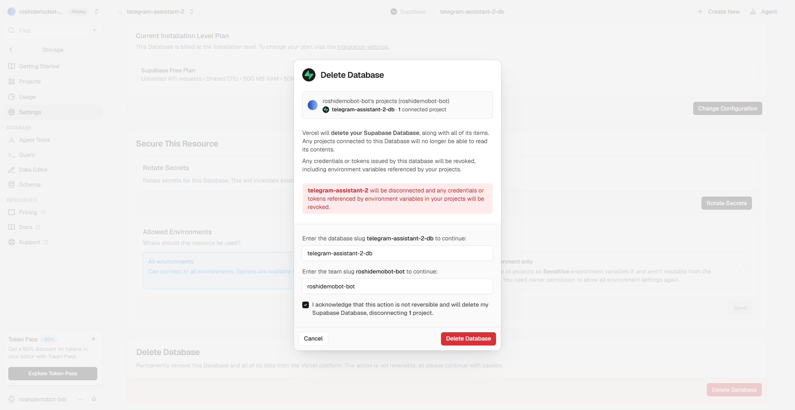

איך מכבים הכול ומפסיקים לשלם
הבוט רץ בחשבונות שלך, ולכן גם הכיבוי אצלך. מספיק לעשות את שני הסעיפים הראשונים כדי שהבוט יפסיק לעבוד ושלא יהיו יותר חיובים. השאר הוא ניקיון.
1. מפסיקים את החיוב על ה-AI (חובה)
זה החיוב היחיד בערכה. ב-API keys של Claude Console מוחקים את המפתח של הבוט (telegram-bot). היתרה שטענת מראש נשארת בחשבון, ולא יורד ממנה יותר כסף.
התקנת בעבר עם Gemini או עם ChatGPT? מוחקים את המפתח אצל אותו ספק. ב-Gemini גם סוגרים את חשבון החיוב ב-Billing, ‹ Close billing account.
2. מוחקים את הבוט בטלגרם
- ב-@BotFather שולחים
/deletebot. - שולחים את שם המשתמש של הבוט, למשל
@dana_helper_bot. (יש לך כמה בוטים? עדיף להקליד את השם מאשר לבחור מרשימה.) - BotFather כותב "you selected @...". בודקים שזה הבוט הנכון, ושולחים בדיוק
Yes, I am totally sure. - מגיעה התשובה "Done! The bot is gone."
3. מוחקים את השרת (Vercel ו-Supabase)
- ב-vercel.com נכנסים לפרויקט
telegram-assistant. - Storage ‹ לוחצים על מסד הנתונים (שם בסגנון
supabase-apricot-garden, אוtelegram-assistant-dbאם התקנת עם Claude Code) ‹ Settings ‹ גוללים לתחתית ‹ Delete Database. בחלון מקלידים את שם המסד ואת שם החשבון שמופיעים שם, מסמנים I acknowledge ולוחצים Delete Database. זה מוחק את כל התזכורות, הפתקים והרשימות.
- Settings ‹ גוללים לתחתית ‹ Delete Project. בחלון מקלידים את שם הפרויקט ואת המשפט
delete my project, ולוחצים Delete Project.
יש לך כמה בוטים? בכל חלון מחיקה מופיע השם של מה שנמחק. בודקים שזה הבוט הנכון לפני שמקלידים.
💡 בחשבון החינמי של Supabase אפשר להחזיק שני בוטים פעילים לכל אדם. מחיקת מסד הנתונים מפנה מקום לבוט חדש.
4. מנתקים את Google (רק אם חיברת את התוספת)
- ב-הרשאות של חשבון Google לוחצים על "פרויקט ללא שם" ‹ Remove access.
- ב-Apps Script לוחצים על שלוש הנקודות ליד "פרויקט ללא שם" ‹ הסרה (Remove).
5. מוחקים את מפתח הקול (רק אם חיברת את התוספת)
ב-Groq מוחקים את המפתח telegram-bot.
6. מוחקים את עותק הקוד (לא חובה)
- ב-GitHub נכנסים לריפו
telegram-assistant‹ Settings ‹ גוללים לתחתית ‹ Delete this repository. - לוחצים I want to delete this repository ‹ I have read and understand these effects, ומקלידים את השם המלא שמופיע בחלון (למשל
dana/telegram-assistant) ‹ Delete this repository. - GitHub מבקש לאשר שזה את/ה (Confirm access): לוחצים Verify via email, ומקלידים את הקוד שהגיע במייל.
7. התקנת עם Claude Code? עוד שני דברים
- הטוקנים (אם לא מחקת אותם בסוף ההתקנה): ב-GitHub מוחקים את
telegram-assistant-setup‹ I understand, delete this token. ב-Vercel לוחצים על שלוש הנקודות ליד הטוקן שיצרת ‹ Delete ‹ DELETE. (שורות בשם "Vercel Dashboard from..." הן הכניסות שלך לאתר. לא נוגעים בהן.) - התיקייה במחשב: מוחקים את תיקיית
telegram-assistantשבה Claude Code עבד.
---
את החשבונות עצמם (GitHub, Vercel, Google) אפשר להשאיר. הם חינמיים ולא מחייבים כלום.